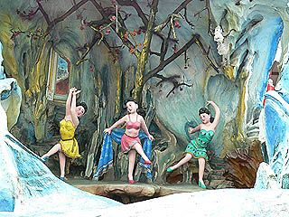

ハウパーヴィラ その2
東洋の至宝、超絶の幻想庭園ハウパーヴィラ。 いよいよ前半のクライマックスともいえる西遊記のコーナーである。 青く彩色された半洞窟状の人工築山の中に点在するコンクリ像により立体一大絵巻が繰り広げられている。 今更ながら胡文虎の想像力に驚かされる。どこをどうしたらこの景観が得られるのだろう？
西遊記といえばかつてテレビ番組で見た程度の知識しかないが、ひとつひとつの物語に案内版（日本語もある！）があるので分かりやすい。
物語は蜘蛛の妖怪のシーンから始まる。天竺への旅の途中、三蔵法師を誘惑する美女2人。
実は蜘蛛の妖怪が姿を変えたもので、三蔵法師の肉を食い、不滅の肉体になろうとしているのだ。
助けようとして逆に蜘蛛の糸に縛られてダメになっちゃった猪八戒。確かテレビでは西田敏之だったっけ。
孫悟空と戦うのは那咤なのだろうか。
那咤は中国の昔話によく登場する少年神で中国系の寺院などでもたまに見かける事がある。
そんな激しい戦いをしている真上ではお嬢さん達が踊っている。これも蜘蛛の妖怪の仕業か？何だか間抜けだなあ〜。
 蜘蛛の妖怪と三蔵法師。女性の腹掛けはチャイニーズトラディショナルなのだろうか。金太郎みたいでお色気係数は若干ダウン気味。
あ、でも裸エプロンとかお好きな貴兄には堪らない・・・のかぁ？
蜘蛛の妖怪が女性に化けて法師を誘惑するという話ゆえ若干エロチックな表現があるが、それもこれも三蔵法師や孫悟空の活躍を示すためのもの。
決して秘宝館的な目的ではないのだ。でも、どうしてもお嬢さん方に目が行きがち。中国の神話や説話の世界にいきなり半裸のお嬢さん、ですからねえ。 最初はこのお嬢さん方もヌードだったのだが1950年代にはビキニになり、今では腹掛けズロース姿になってしまったのである。 比較的ヌードに厳しい御国柄ですから。 最後の方ではまた一暴れ。それを楽しそうに見る檻の中の娘さん達。 「スンマセン、一寸頭痛がしますねん・・・」 てな訳で遥かなる西遊記の旅は終わる。っつーか全然旅して無いじゃないっすか。西遊記だったらやっぱり観音様の手の中を飛ぶ話とか胸毛をむしってフッと息を吹きかけたらクローン孫悟空がいっぱい現れるとか、どっちかというとそういうのが見たかったです。 もしかしてアレってテレビだけの話だったのか？マチャアキの胸毛ぴゅー。
西遊記がある場所は小高い広場にあり、中央には巨大な記念碑が建っている。その真下には先程訪れた大仏パゴダが見える。 その先には海が見え、巨大な船舶が行き交っている。ここから東側にはかつてテーマパーク時代に新しくつくられたアトラクションがあったが今は閉鎖中。 上左はかつてのシアター。ここから先は中には入れない。 で、その手前の小さな池。ナゾの魚がチョット怖いです・・・
西遊記の築山の裏側は広い芝生の広場になっていて、陽気のいい日などはここでお弁当を広げてピクニック気分・・・などと思っていたらその一画には食欲も減退しそうな濃ゆーい世界が繰り広げられている。 これもまた西遊記と同じ半洞窟にコンクリ像のジオラマという手法。こちらは一貫したテーマではなく様々な教訓を示したオムニバス集のようだ。 要は胡文虎氏が世間に伝えたいメッセージ集ということになろうか。 西遊記よりさらに人形の数が増えてエピソードの数も多く、かなりパワーアップしている逸品である。 特筆すべきはこのジオラマ全体が多層構成になっているところである。多くは上下2層になっているが、テーマによっては3層になったり1層になったり有機的に変化している。概ね上が天上界や善行の風景で、下が悪い例だったりアクティブなシーンが多いようだ。 コレを建築に当てはめたら、かなりキテレツな建物になるだろう。 教訓；友達を見捨てないようにしましょう。 足、噛まれちゃってます。しかも逃げた方の男の子はリーゼント？ 教訓；貝や魚に化けるのは止めましょう（ウソ） 寓話；ラン・サンは親の店を手伝っているが怠け者で働きません。父親が亡くなる前に帳簿をラン・サンに渡して店の経営を任せます。 ラン・サンはシュエチンの助けを受け何とか店を経営する事が出来ました。 教訓；人間は若い時に一生懸命働かなくてはなりません。 ラン・サンって誰？有名人？別にわざわざ名指ししなくても働かない怠け者なんぞ私の身の回りにもゴマンといるぞ。 もしかして伝説になるほどの史上最悪の怠け者なのかも知れない。 寓話；チェン・ダイ・チャイは博打に手を出し店を開けがち。博打にいった親を呼び戻しにいった息子が交通事故。悲惨。 教訓；博打はやめとけ！ このジオラマの構成は良く出来ている。2層構造になっている上の層から下の層に坂道が設けられていてその坂が事故現場になっているのだ。坂の上から駆け寄る母親、横たわる子供、そんな事故などつゆ知らず賭事に夢中なダメ親父。三者の生み出す悲劇を見事にひとつの空間に納めきっている。かなりドラマ性の高いジオラマだ。 次は大作だ。 寓話；傷ついた亀を助けたたワン・ミンは2年後、乗っていた船が沈没した際にその助けた亀に助けられました。 教訓；言わないでもわかりますね。 浦島太郎の前半部分と同じような話である。傷ついた亀を漁師から買取ったりと細かいところまで似ているので、何らかの影響があったのだろう。 船は45度に傾き、今まさに沈没する瞬間を見事に捉えている。荒れ狂う波の表現や船の造形、逃げまどう人々の表情に力の込め具合が伺える。 ここでは階層が３つに分かれている嵐で船が傾いている階層の上と下にそれぞれ階層がある。下は海面になっており嵐のシーンと関係性があるが、上は羅漢さんがヌボーっと立っているので関係ないと思われる。 上は羅漢のアンニュイな群像で下は嵐でてんてこ舞い。なんだかドリフの二階建てコントを彷佛とさせます。 この人達は本題には直接関係ないのだがいいお味を醸し出していらっしゃる。それにしても女性の髪形ふっる〜！ この辺りで一大説教ジオラマの約半分を見た事になる。中央にはお釈迦様が邪悪な目付きで悟りを開いています。 で、説教ジオラマ後半戦。さあ、説教されまくるぞ〜！ 借金で首が回らない家族の悲劇。 右の借金取りと思しき男の空気椅子キックが凄い。 阿片窟に向かう若い衆と逮捕される密輸業者。教訓；ヘルメットをかぶろう。違うか。 
金持ちは起らせるとパンチとキックを同時にくり出します。教訓；相手の攻撃を良く見きわめよう。（ウソ） 上右は泥棒の現行犯逮捕シーン。鶏泥棒ですな。 下では悲惨な事件が多発しているが上の世界はそんな事にはお構いなし。香港のキャバレーでみんな楽しく遊ぶの図。隣には上海のナイトクラブもあります。 しかし浮かれた世界の足元には階段があり、そこをおりると貧困の世界。これは「遊んでるとこうなっちゃうよ〜」という胡文虎氏のメッセージなのではなかろうか。 こうして怒濤の説教は終わる。横にスクロールする舞台装置で芝居を見たかのような壮大な説教ワールドだったぞ。実際には自分が横に歩いていたんだけどね。 いや〜凄かった。あまりにも教育的指導が満載だったのですっかり白髪になっちゃいました。 で、一番端っこの岩陰に隠れるようにいた2人。 
こっコイツら、ただ者じゃねえ！ 上目づかいに飯を食う表情って、何て卑しく見えるんでしょう。これは胡文虎の指示なのか、コレを作った職人のセンスなのか？ 非常に気になるところである。
さて。 説教ジオラマを抜けると間髪入れずに激しいバトルシーンが展開されてます。封神榜とある。 封神榜とは封神演義という妖怪退治の古典物語だが、太公望や周の文王など実在の人物も登場するそうだ。読んでないから詳しい事は知らないよ。 合戦ジオラマを覆うように屋根が付いている。先程の西遊記や説教ジオラマもそうだが雨や日射しから中の彫像を守るためと思われる。 封神榜のジオラマを過ぎるとようやくすっきりとした広場に出る。西遊記、説教ジオラマ封神榜と大作が立て続けに押し寄せてきたので、結構疲れた。 広場の中央にはイイ顔の観音像。後ろには龍の半立体レリーフが施された九龍壁がある。 そしてその広場の隅の方には巨大な面が。 京劇の面なのだろうか。４つともかなり邪悪な表情をしている。しかも顔の肉の盛り上り具合などがやけにリアルなところが恐ろしい。 しかもデカい。3メートル位ある。 お三方、何やら険しい顔でお話中。きっと難しい話をしてらっしゃるんでしょう・・・ 「・・・だからあ〜ジャンケンで勝った人が全部食べればいいんじゃないの〜」 「いや、ここはひとり1個づつ」「いや、真ん中のが一番大きいぞ！」 
卓上の果物までコンクリで作りこんであるお作り根性が私は大好きです。
ハウパーヴィラその３へGO！
馬来半島珍寺伝説
珍寺大道場 HOME